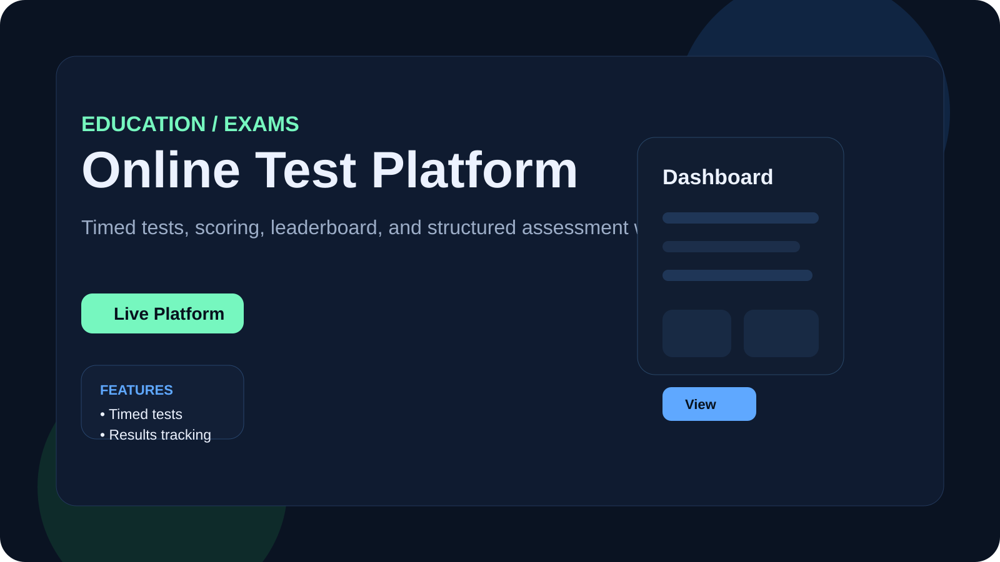
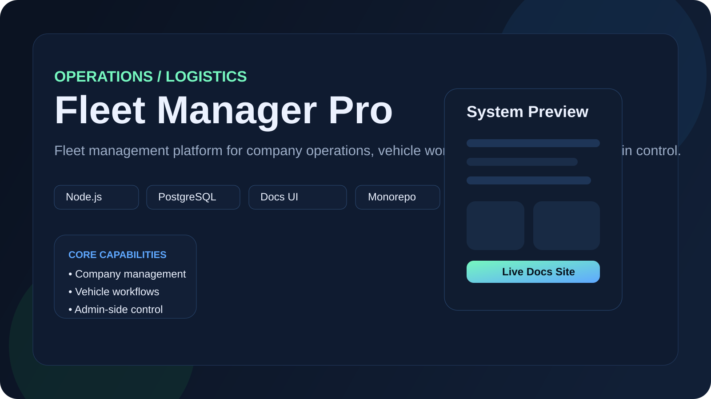

Available for freelance, collaboration, and product work
I build fast, professional web products that solve real business problems.
JavaScript-focused developer creating responsive interfaces, business dashboards, and practical web applications with React, Next.js, TypeScript, Firebase, Supabase, Prisma, and modern frontend architecture.
Frontend-first
Clean UI, smooth UX, strong responsiveness
Real projects
POS systems, dashboards, fleet tools, calculators, and test platforms
Production mindset
Structure, deployment, maintainability, and performance

Responsive UI Design
Role-Based Applications
Firebase Integrations
Static & Dynamic Deployment
Modern JavaScript Stack
About Me
Developer focused on practical, polished, and deployable solutions
I build websites and applications that are not just visually strong, but also useful in real workflows. My approach is simple: make the interface clear, the logic maintainable, and the product ready for actual users.
I enjoy turning ideas into working products — from business tools and restaurant systems to calculators, test platforms, and productivity apps.
Frontend Engineering
Readable layouts, reusable components, and responsive design across screen sizes.
Application Logic
Interactive flows, dynamic forms, state handling, and real-world user journeys.
Deployment Mindset
GitHub-based workflow, Vercel/Render/Railway deployment, Firebase and Supabase services, and production-focused structure.
HTML
CSS
JavaScript
React
Next.js
Firebase
Git
GitHub
Vercel
Expertise
What I can build
Not vague “web design”. Actual deliverables: usable interfaces, business tools, product-style dashboards, and systems people can work with.
Frontend Interfaces
Modern pages and dashboards with responsive layouts, polished sections, clean hierarchy, and better user flow.
Web Applications
Interactive applications with forms, stateful components, user actions, and practical tools for daily workflows.
Firebase Solutions
Authentication, Firestore data flows, real-time updates, and role-based web systems for production-ready apps.
Deployment & Refinement
Project cleanup, visual improvements, launch-ready structure, and smoother delivery through GitHub and Vercel.
Selected Work
Projects that reflect real implementation
Your old portfolio had projects, but they were visually uneven and the strongest work was not positioned as the strongest work. This version fixes that.


Featured
Fleet Management
Fleet Manager Pro
Fleet operations platform focused on company management, vehicle workflows, documentation structure, and admin-side business control. This is a more serious systems project and it deserves visible placement in the portfolio.
MonorepoNode.jsPostgreSQLDocs UI


Need a serious portfolio or product UI?
Start a Conversation
I turn rough ideas into cleaner, stronger, launch-ready web experiences.
Contact
Let’s build something useful
If you have a project idea, a product to improve, or a business tool to build, send the details clearly. Good projects start with a concrete problem, not vague excitement.